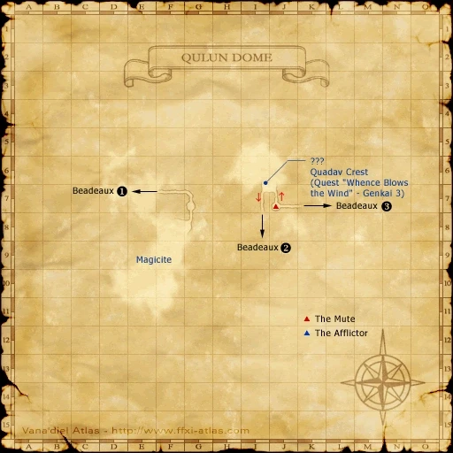
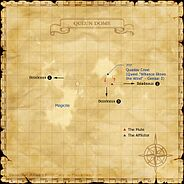

Description
Qulun Dome is a dungeon in Derfland.
Map

Involved in Quests / Missions
| Quest / Mission | Type | Starter | Location |
|---|---|---|---|
| An Affable Adamantking? | General | Raptorlegs Gedwad | Qulun Dome |
| Whence Blows the Wind | Genkai | Maat | Ru'Lude Gardens (H-5) |
Notorious Monsters
| Name | Level | Drops | Steal | Family | Spawns | Notes |
|---|---|---|---|---|---|---|
| Za'Dha Adamantking | 85 | Beetle Blood Damascene Cloth Demon Horn Ebony Log Mahogany Log Mistilteinn Philosopher's Stone Phoenix Feather Platinum Beastcoin Platinum Ore Raxa Scroll of Raise III Vile Elixir White Mage's Testimony Wool Cloth Wyvern Scales | — |  QuadavImage source QuadavImage source | — | Respawn: 21-24 hr; A, L, T(H) |
| Diamond Quadav | 75 | White Mage's Testimony Dodge Cape Scroll of Raise II Scroll of Shellra IV Diamond | Platinum Beastcoin | QuadavImage source | — | Respawn: 21-24 hr; A, L, T(H) |
| Adaman Quadav | 72-74 | Dark Knight's Testimony Gold Beastcoin | Gold Beastcoin | QuadavImage source | — | Respawn: 20 min; A, L, T(H) |
| Ruby Quadav | 71-73 | Red Mage's Testimony Scroll of Shell IV Ruby | Beastcoin | QuadavImage source | — | Respawn: 20 min; A, L, T(H) |
Regular Monsters
Event Monsters
| Name | Level | Drops | Steal | Family | Spawns | Notes |
|---|---|---|---|---|---|---|
| Diamond Quadav | — | — | — | QuadavImage source | 1 | Spawned Quest: An Affable Adamantking?; A, L |
| De'Pha Unscarred | — | — | — | QuadavImage source | 1 | Spawned Quest: An Affable Adamantking?; A, L |
| Hu'Rhe Marrowgorger | — | — | — | QuadavImage source | 1 | Spawned Quest: An Affable Adamantking?; A, L |
| Ka'Ghi Trovetaker | — | — | — | QuadavImage source | 1 | Spawned Quest: An Affable Adamantking?; A, L |
| Mu'Zha Infernoblade | — | — | — | QuadavImage source | 1 | Spawned Quest: An Affable Adamantking?; A, L |
| No'Bhu Unyielding | — | — | — | QuadavImage source | 1 | Spawned Quest: An Affable Adamantking?; A, L |
| So'Hyu Quakemaker | — | — | — | QuadavImage source | 1 | Spawned Quest: An Affable Adamantking?; A, L |
Story walkthroughs in this area
| Story | Mission / quest |
|---|---|
| WotG W-10 | Howl from the Heavens |
References
External references describe their own server or retail rules. Documented Zenith changes take precedence.
Map credits: Map 1 — HorizonXI Wiki. Original game maps © SQUARE ENIX; redrawn maps retain the credited authorship and license.

Additional level-75 reference


This dark chamber beneath the Beastmen stronghold of Beadeaux is the domain of the Quadav leader Za'Dha the Adamantking.
Connecting Areas
- Beadeaux
- Pashhow Marshlands (only by using Escape)
If you see a quest that is listed as Yes but is not working properly please report it on GitHub. Make sure to list as many details as possible when describing what is not working. If there happens to already be a report on that quest regarding your problem, just add your experience to that report.
Legend
Yes = Quest is in game and working
Yes but bugged = Quest is in game but not working properly and being worked on or in que to be worked on.
No = Not in game yet but is planned
Involved in Quests/Missions
|
Quest |
Type |
Starter |
Location |
Available? |
| An Affable Adamantking? | General | -- | -- | No |
| Whence Blows the Wind | Genkai | Maat | Ru'Lude Gardens (H-5) | Yes |
NPCs Found Here
- None
Possible Weather Conditions
- None
Notorious Monsters Found Here
|
Name |
Level |
Drops |
Steal |
Family |
Spawns |
Notes | |||||||
|
72-74 |
1 |
A, L, T | |||||||||||
|
75 |
1 |
A, L, T | |||||||||||
|
71-73 |
2 |
A, L, T | |||||||||||
|
85 |
1 |
A, L, T | |||||||||||
|
1 |
A, L | ||||||||||||
|
1 |
A, L | ||||||||||||
|
1 |
A, L | ||||||||||||
|
1 |
A, L | ||||||||||||
|
1 |
A, L | ||||||||||||
|
1 |
A, L | ||||||||||||
|
HP = Detects Low HP; M = Detects Magic; Sc = Follows by Scent; T(S) = True-sight; T(H) = True-hearing JA = Detects job abilities; WS = Detects weaponskills; Z(D) = Asleep in Daytime; Z(N) = Asleep at Nighttime | |||||||||||||
Mobs Found Here
|
Name |
Level |
Drops |
Steal |
Family |
Spawns |
Notes | |||||||
|
69-72 |
3 |
A, L, H | |||||||||||
|
69-72 |
4 |
A, L, H | |||||||||||
|
69-72 |
3 |
A, L, H | |||||||||||
|
69-72 |
5 |
A, L, H | |||||||||||
|
HP = Detects Low HP; M = Detects Magic; Sc = Follows by Scent; T(S) = True-sight; T(H) = True-hearing JA = Detects job abilities; WS = Detects weaponskills; Z(D) = Asleep in Daytime; Z(N) = Asleep at Nighttime | |||||||||||||
Adapted from Eden Wiki: Qulun Dome · Contributors and history · CC BY-SA 4.0. Revision 45493. Layout, links and optional background text adapted for Zenith.